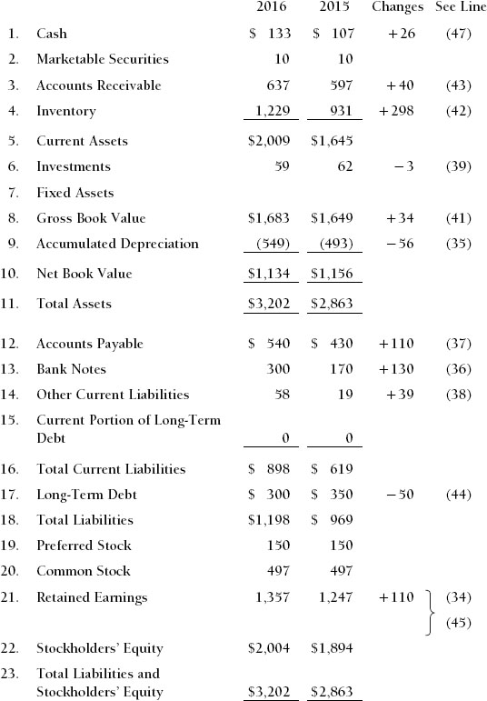
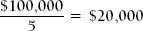
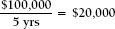
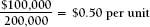
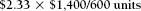
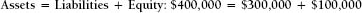

The balance sheet is a representation of the company’s financial health. It is presented at a specific point in time, usually the end of the fiscal (accounting) period, which could be a year, a quarter, or a month. It lists the assets that the company owns and the liabilities that the company owes to others; the difference between the two represents the ownership position (stockholders’ equity).
More specifically, the balance sheet tells us about the company’s:
Financial strength reflects the company’s ability to:
The balance sheet also helps us to measure the company’s operating performance. This includes the amount of profits and cash flow generated relative to:
Analyzing the data in the balance sheet helps us to evaluate the company’s asset management performance. This includes the management of:
Mathematical formulas called ratios are very valuable in the analytical process. They should be used to compare the company’s performance against:
Look at the balance sheet of the Metropolitan Manufacturing Company, shown in Exhibit 1-1, dated December 31, 2016. Notice that it also gives comparable figures for December 31, 2015. Providing the same information for the prior year is called a reference point. This is essential for understanding and analyzing the information and should always be provided. The third column describes the differences in the dollar amounts between the two years. This information summarizes cash flow changes that have occurred between December 31, 2015, and December 31, 2016. This very critical information is presented more explicitly in a report called the sources and uses of funds statement or the statement of cash flows, which is described more fully in Chapter 3. (The numbers in parentheses in the fourth column refer to the line items in Exhibit 3-1, The Sources and Uses of Funds Statement, which we discuss in Chapter 3.)
Before we look at the balance sheet in detail, we need to understand the difference between the concepts of expenses and expenditures. Understanding this difference will provide valuable insights into accounting practices.
An expenditure is the disbursement of cash or a commitment to disburse cash—hence the phrase capital expenditure. An expense is the recognition of the expenditure and its recording for accounting purposes in the time period(s) that benefited from it (i.e., the period in which it helped the company achieve revenue).
The GAAP concept that governs this is called the matching principle: Expenses should be matched to benefits, which means that they should be recorded in the period of time that benefited from the expenditure rather than the period of time in which the expenditure occurred.
The accounting concepts that reflect this principle include the following:
Exhibit 1-1. Metropolitan Manufacturing Company, Inc.
Comparative Balance Sheets December 31, 2016 and 2015 ($000)

Let’s review one example. Suppose a company buys equipment (makes a capital expenditure) for $100,000. The company expects the equipment to last (provide benefits) for five years. This is called the equipment’s estimated useful life. Using the basic concept called straight-line depreciation (to be discussed later in this chapter), the depreciation expense recorded each year will be:

Each year there will be an expense of $20,000 on the company’s income statement. Clearly, no such cash expenditures of $20,000 were made during any of those years, only the initial $100,000.
The assets section of the balance sheet is a financial representation of what the company owns. The items are presented at the lower of their purchase price or their market value at the time of the financial statement presentation (see the discussion of GAAP in Chapter 4).
Assets are listed in the sequence of their liquidity, that is, the sequence in which they are expected to be converted to cash.
Cash is the ultimate measure of an organization’s short-term purchasing power, its ability to pay its debts and to expand and modernize its operations. It represents immediately available purchasing power. This balance sheet category primarily consists of funds in checking accounts in commercial banks. This money may or may not earn interest for the company. Its primary characteristic is that it is immediately liquid; it is available to the firm now. This account may also be called Cash and Cash Equivalents or Cash and Marketable Securities. Cash equivalents are securities with very short maturities, perhaps up to three months, that can earn some interest income for the company.
This category includes the short-term investments that companies make when they have cash that will not be needed within the next few weeks or months. As a result of intelligent cash planning, the company has the opportunity to earn extra profit in the form of interest income from these securities. Some companies earn sizable returns from these investments, particularly when interest rates are high.
The securities that can be placed in this category include certificates of deposit (CDs), Treasury bills, and commercial paper. All have very short maturities, usually 90 to 180 days. CDs are issued by commercial banks. Treasury bills are issued by the U.S. government, and commercial paper is issued by very large, high-quality industrial corporations.
Purchasing these high-quality securities, which generally have little or no risk (with the exception of recent history, when regulatory oversight was deficient), gives a company the opportunity to earn interest on money that it does not need immediately.
When a company sells products to customers, it may receive immediate payment. This may be done through a bank draft, a check, a credit card, a letter of credit, a wire transfer, or, in the case of a supermarket or retail store, cash. On the other hand, as part of the selling process, the customer may be given the opportunity to postpone paying for the products or services until a specified future date. This is referred to as giving the customer credit. Accounts receivable is the accounting term that describes the value of products delivered or services provided to customers for which the customers have not yet paid. The typical time period that companies wait to receive these funds is 30 to 60 days.
In order to have accounts receivable, the company needs to have earned revenue. Revenue is the amount of money that the company has earned by providing products and services to its customers. Sometimes cash is received before revenue is earned, as when a customer makes a down payment. Retail stores usually receive their cash when they earn the revenue. For credit card sales, including PayPal and Apple iPay, this is usually the next day. Most other corporations receive their cash after they earn their revenue, resulting in accounts receivable.
A further word about revenue. It is not uncommon in certain businesses for the company to receive some advanced payment. As we just mentioned, there might be a down payment when an order is placed. And there are even circumstances when the company receives all of the cash before it actually earns the revenue.
When a company designs customized products for sale to one specific customer, for example, it may require payment in full before production actually begins. It may be hiring people specific to the job, buying materials not useful anywhere else, and making a product not sellable to any other customer, especially if the design is owned by the customer placing the order. The financial risk of the customer paying slowly or maybe not at all might be too great.
When a company licenses software for a three-year period, it may be required to pay for the three-year license in advance. Technically we do not buy software; we buy the privilege of using it for a specified period of time in the form of a license.The practice of paying in advance is quite common when hiring consulting firms for major long-term projects. Payments might be made monthly, in advance of the project’s progress.
When a company receives funds in advance of the work done, this cash appears on the balance sheet as an asset called “deferred revenue.” There will be a commensurate liability on the balance sheet to represent the work that the company “owes” to the customer. On day one of the project, these asset and liability amounts will be the same. If Metropolitan Manufacturing Company had received advanced customer payments (which it has not), the deferred revenue would appear as a current asset on the balance sheet, and as a long-term asset if the arrangement is expected to last more than one year.
This represents the financial investment that the company has made in the manufacture or production (or, in the case of a retail store, the purchase) of products that will be sold to customers. For manufactured goods, this amount is presented in three categories: finished goods, work in process, and raw materials.
Finished Goods. These are fully completed products that are ready for shipment to customers. The amounts shown on the balance sheet include the cost of purchased raw materials and components used in the products, the labor that assembled the products at each stage of their value-adding manufacture (called direct labor), and all of the support expenditures (called manufacturing overhead) that also helped to add value to the products. Products in this category are owned by the company, and thus are presented as assets. They will remain so until they are delivered to a customer’s premises or the customer’s distribution network (vehicles or warehouse) and the customer has agreed to take financial responsibility for them (the customer buys them).
Work in Process. Inventory in this category has had some value added by the company—it is more than raw materials and components, but it is not yet something that can be delivered to the customer. If the item has been the subject of any activity by the production line, but is not yet ready for final customer acceptance, it is considered work in process.
Raw Materials. Raw materials are products or components that have been received from vendors or suppliers and to which the company has done nothing except receive them and store them in a warehouse. Since the company has not yet put the raw materials into production, no value has yet been added. The amount presented in this category may include the cost of bringing the product from the vendor to the company’s warehouse, whether this freight cost is paid separately, itemized in the vendor’s invoice, or just included in the purchase price.
This is the sum of the asset classifications previously identified: cash, marketable securities, accounts receivable, and inventory, plus a few more minor categories. It represents the assets owned by the company that are expected to become cash (liquid assets) within a one-year period from the date of the balance sheet.
Presentation of Current Assets. Accounts receivable is usually presented net of an amount called allowance for bad debts. Sometimes it is called “accounts receivable (net).” This is a statistically derived estimate of the portion of those accounts receivable that will not be collected. It is based on an analysis of the company’s past experience in the collection of funds. This estimate is made and the possibility of uncollected funds recognized, even though the company fully expects to receive all of the funds in each account in its accounts receivable list. All of the amounts included in the accounts receivable balance were originally extended to creditworthy customers who were expected to pay their bills in a timely manner—otherwise credit would not have been extended to the customers. However, sometimes the unexpected does occur and some funds will not be collected.
This reserve or allowance for bad debts is statistically derived based on past collection experiences. It is usually in the range of 1 to 2 percent of accounts receivable. (There are exceptions to this, particularly for pharmaceuticals and medical products.) The amount is established by the company’s internal accounting staff and is reviewed and revised annually based on the company’s actual collections experience.
For Metropolitan Manufacturing Company, the calculation of net accounts receivable is as follows:
| Accounts Receivable | $647,000 |
| Allowance for Bad Debts | (10,000) |
| Accounts Receivable (net) | $637,000 |
Accounting for inventory also has some specific characteristics of which the reader should be aware.
The figure given for inventory is the amount it cost the company to buy raw materials and components and to produce the product. The amounts presented are based on the accounting principle lower of cost or market. If the economic value of the inventory improves because of selling price increases or improvement in other market conditions, or because the cost of replacing it has increased, the inventory amounts on the balance sheet do not change. This is true even if the raw material is a commodity, like oil, whose price in the marketplace increased considerably until late 2014. Inventory is presented at cost, which is lower than market value at that point in time. However, if the value of the inventory decreases because selling prices are soft or because the prospects for its sale have significantly diminished, then the balance sheet must reflect this deteriorated value. This could also occur if the cost to replace the commodity has decreased below the price originally paid. In this case, where market value is below cost, the inventory amounts will be presented at market. This cost deterioration in the oil business was dramatic between late 2014 and 2015.
The accounting process necessary to reflect this latter condition is called a writedown. The company would be required to write down the value of the inventory to reflect the reduced value. Oil companies that own inventory have been required to write down this inventory on their books. Some airlines bought enough gasoline to cover their needs for a year or so. The value of these hedges, which are treated as an asset, were also written down in early 2015.
There are a number of possible components of these two categories. These include:
This information is also presented at the lower of cost or market. If the market value of a patent increases by millions of dollars above what the company paid for the right to use it or develop it, this very positive business development will not be reflected on the balance sheet. However, if the asset proves to be disappointing or without value, this must be reflected by a writedown or write-off. Accounting does not reflect the improved economic value of the assets, regardless of the business certainty of that improvement.
Fixed assets are assets owned by the company that are used in the operation of the business and are expected to last more than one year. They are sometimes called tangible assets and often represent a substantial investment for the company. Included in this category are:
Again, fixed assets are tangible assets owned by the company that are used in the operation of its business and are expected to last more than one year. One of the generally accepted accounting principles identified in Chapter 4 is materiality. This relates to the significance or importance of an accounting event relative to the overall financial statement presentation. As a result, companies are permitted to identify a threshold dollar amount below which a purchased item will be recorded as an expense on the company’s income statement and will not appear on the balance sheet at all, even though the item is expected to provide benefit for more than one year and therefore would otherwise be considered a tangible asset.
This threshold amount can be as much as several thousand dollars. Thus if the company buys a single desk for $1,000, it may be treated as an expense on the income statement and charged to the budget accordingly. However, if the company buys 20 of these desks (and the accompanying chairs), the desks will be presented as furniture and fixtures, recorded as a capital expenditure, and treated as a fixed asset on the balance sheet.
Thus, the amended definition of a fixed asset is a tangible item that the company buys, will use in the business, and expects to last more than one year, and that costs more than the predetermined threshold dollar amount when purchased.
This records the original amount paid, at the time of purchase, for the tangible assets that the company currently owns, subject to the lower of cost or market accounting rule. This amount never reflects improved economic value, even if, for example, a piece of real estate was purchased 30 years earlier and has greatly increased in market value.
This is sometimes called the Reserve or Allowance for Depreciation. It is the total amount of depreciation expense that the company has recorded against the assets included in the gross book value.
When tangible assets are purchased and recorded on the balance sheet as fixed assets, their value must be allocated over the course of their useful life in the form of a noncash expense on the income statement called depreciation. The useful or functional life is estimated at the time the asset is purchased. Using one of several accounting methodologies, the gross book value is then apportioned over that time period. The accumulated depreciation amount on the balance sheet tells us how much has been recorded so far. The concept of a noncash expense is explored further later in this chapter.
This is the difference between the gross book value and the accumulated depreciation amounts. It has little, if any, analytical significance.
This is the sum total of current assets, the net book value of fixed assets and investments, and any other assets that the company may own.
Suppose a company makes a capital expenditure of $100,000 for a fixed asset that is expected to last five years. The presentation of this in the financial statements would be as follows:
The gross book value on the balance sheet will be $100,000. This is a record of what the company paid for the asset when it was purchased. During the first year, the annual depreciation expense on the income statement will be $20,000.
The accumulated depreciation on the balance sheet is the total amount of depreciation expense included on the income statement from the time the fixed asset(s) were purchased. The net book value is the difference between the two.
Notice that the gross book value remains the same in Year 2. This amount may increase if significant enhancements are made to the asset, or it may decrease if the asset deteriorates in value, resulting in a writedown. Generally, however, the amount will remain the same over the entire life of the asset.
The accumulated depreciation in Year 2 is the sum total of the depreciation expenses recorded in Years 1 and 2. It is cumulative.
In Year 5, and for as long as the asset is useful, it will remain on the balance sheet as:
| Gross Book Value | $100,000 |
| Accumulated Depreciation | (100,000) |
| Net Book Value | 0 |
At this point, the asset has no “book” value. It is said to be fully depreciated. Its value to the business, however, may still be substantial. When the asset is ultimately retired, its gross book value, accumulated depreciation, and net book value are removed from the balance sheet.
Depreciation Methods. The most common method of depreciation, and the one used in this example, is called straight-line. It basically involves dividing the gross book value by the number of years in the useful life of the asset. Thus, in the example, the annual depreciation expense will be:

There are three other methods that are often used. They are:
Double-Declining-Balance. Notice that in straight-line depreciation, depreciation expense for an asset with a five-year life is 20 percent (100 percent divided by 5 years) times the gross book value. (If the depreciable life were different from five years, the calculation would change.) In the double-declining-balance method, the percentage is doubled, in this case to 40 percent, but the percentage is multiplied by the net book value. The calculation of the depreciation expense based upon a gross book value of $100,000 is as follows:
| Depreciation | |||
| Expense | |||
| Year | Net Book Value × 40% | Remaining Balance | |
| 1 | $100,000 × 40% = $ 40,000 | $100,000 – $40,000 = $60,000 | |
| 2 | $ 60,000 × 40% = $ 24,000 | $ 60,000 – $24,000 = $36,000 | |
| 3 | $ 36,000 × 40% = $ 14,400 | $ 36,000 – $14,400 = $21,600 | |
| 4 | $ 21,600 – 2 = $ 10,800 | $ 21,600 – $10,800 = $10,800 | |
| 5 | $ 10,800 | $ 10,800 – $10,800 = 0 | |
| $100,000 | |||
Notice that the first year’s depreciation expense is double the amount that it would have been using the straight-line method. Also, when the annual expense becomes less than what it would have been under the straight-line method, the depreciation expense reverts to straight-line for the remaining years. Some companies use this method for tax purposes. The first and second years’ expense is higher than what straight-line would have yielded, so the tax savings for those years will be higher. Tax rules for depreciation are changing all the time. The threshold amount used to determine what is a fixed asset and what is an expense also changes frequently.
Sum-of-the-Years’-Digits. In this method, numbers representing the years are totaled, then the order of the numbers is inverted and the results are used to calculate the annual depreciation expense. The calculations are:
1 + 2 + 3 + 4 + 5 = 15
| Year | Annual Expense | |
| 1 | $100,000 × 5/15 | =$ 33,333 |
| 2 | $100,000 × 4/15 | =$ 26,666 |
| 3 | $100,000 × 3/15 | =$ 20,000 |
| 4 | $100,000 × 2/15 | =$ 13,334 |
| 5 | $100,000 × 1/15 | =$ 6,667 |
| $100,000 | ||
This method results in a depreciation expense for the first two years that is higher than that produced by straight-line but lower than that produced by the double-declining-balance method.
Per-Unit. The third depreciation method identified is often built into the cost accounting system of manufacturing companies. It involves dividing the cost of the fixed asset by the total number of units it is expected to manufacture during its useful life. If a machine is expected to produce 200,000 units of product over its useful life, the per-unit depreciation expense will be calculated as follows:

If production during the first year is 60,000 units, the annual expense that first year will be 60,000 x $0.50 = $30,000.
In most manufacturing standard cost systems, the depreciation expense per unit is built into the manufacturing overhead rate or burden.
In all methods of calculating depreciation, accounting principles are not compromised. To summarize:
Accountants in a company that manufactures or sells products are required to adopt a procedure to reflect the value of the inventory. This is an accounting procedure and has no bearing on the physical management of the product. The accounting procedures are commonly known as LIFO and FIFO, which mean last-in, first-out and first-in, first-out. An example will best illustrate this.
A company purchases 600 of product at the following prices:
| Units | Price | Expenditure | |
| 100 units @ $1.00 each | $ 100.00 | ||
| 200 units @ $2.00 each | $ 400.00 | ||
| 300 units @ $3.00 each | $ 900.00 | ||
| 600 units | $1,400.00 | ||
Now suppose that 400 units are sold and 200 units remain in inventory. The accounting questions are: What was the cost of the goods that were sold? And what is the value of the inventory that remains?
Under LIFO, the goods that were purchased last are assumed to have been sold first. Therefore, the cost of goods sold (COGS) would be $1,100 and inventory would be $300, calculated as follows:
Cost of Goods Sold:
| 300 units × $3.00 = $ 900 100 units × $2.00 = $ 200 |
||
| COGS | 400 units = $1,100 |
Inventory:
| 100 units × $2.00 = $200 100 units × $1.00 = $100 |
||
| Inventory | 200 units $300 |
Under FIFO, the goods that were purchased first are assumed to have been sold first. Therefore, the cost of goods sold would be $800 and inventory would be $600, calculated as follows:
Cost of Goods Sold:
| 100 units × $1.00 = $100 100 units × $1.00 = $100 100 units × $3.00 = $300 |
||
| COGS | 400 units $800 |
Inventory:
| 200 units × $3.00 = $600 |
Companies may also identify the actual cost of each unit if this can be readily done or calculate a running average. In this example, the per-unit value of cost of goods sold and inventory would be:

This gives a value of $933 for cost of goods sold and $467 for inventory.
Liabilities are the amounts that the company owes to others for products and services it has purchased and amounts that it has borrowed and therefore must repay.
Current liabilities include all money that the company owes that must be paid within one year from the date of the balance sheet. Long-term liabilities are those that are due more than one year from the date of the balance sheet. Included in current liabilities are accounts payable, short-term bank loans, and accrued expenses (which we have included in other current liabilities). There are no issues of quality in these classifications, only time. The current liabilities and current assets classifications are time-referenced.
Accounts payable are amounts owed to vendors or suppliers for products delivered and services provided for which payment has not yet been made. The company has purchased these products and services on credit. The suppliers have agreed to postpone the receipt of their cash for a specified period as part of their sales process. Normally this money must be paid within a 30-to 60-day time period.
This amount has been borrowed from a commercial bank or some other lender and has not yet been repaid. Because the amount must be repaid within one year, it is classified as a current liability. This amount includes only the principal owed. It does not include interest that will be due in the future because that money is not yet due.
This category includes all the short-term liabilities not included in any other current liability category. They are primarily the result of accruals. At any given point in time, the company owes salaries and wages to employees, interest on loans to banks, taxes, and fees to outsiders for professional services. For example, if the balance sheet date falls on a Wednesday, employees who are paid each Friday have worked for three days up to the balance sheet date. Thus, the company owes these employees three days’ pay as of the balance sheet date, and that liability is recorded as an accrual on the balance sheet and an accrued expense on the income statement.
This category includes liabilities that had a maturity of more than one year when the funds were originally borrowed, but that now, because of the passage of time, are due in less than one year as of the date of the balance sheet.
This is the total of all of the funds owed to others that are due within one year from the date of the balance sheet. It includes accounts payable, short-term loans, other current liabilities, and the current portion of long-term debt.
Long-term debt is amounts that were borrowed from commercial banks or other financial institutions and are not due until sometime beyond one year from the date of the balance sheet. Their maturity ranges from just over one year to perhaps twenty or thirty years. This category may include a variety of long-term debt securities, including debentures, mortgage bonds, and convertible bonds. If the category is titled Long-Term Liabilities, it may also include liabilities to tax authorities, including the IRS, states, and foreign governments.
Stockholders’ equity represents the cumulative amount of money that all of the owners of the business have invested in the business since the date the corporation began. They accomplished this in a number of ways. Some of the investors purchased preferred shares from the company. For Metropolitan Manufacturing Company, the cumulative amount that these investors put in is $150,000. Other investors (or perhaps the same people) purchased common shares from the company. The cumulative amount that they put in is $497,000. The third form of investment takes place when the owners of the company (the owners of common stock) leave the profits of the company in the business rather than taking the money out of the company in the form of dividends. The cumulative amount of this reinvestment is represented on the balance sheet by the retained earnings of $1,357,000.
Remember that the amounts shown for preferred stock, common stock, and retained earnings are the historical amounts that the company received when it sold those securities and retained the profits. There is no relation between these amounts and the current value of the business or its shares, should they be bought and sold on a market.
Holders of this class of stock receive priority in the payment of returns on their investment, called dividends. Preferred stock carries less risk than common stock (to be discussed next) because the dividend payment is fixed and must be made before any profit is distributed (dividends are paid) to the holders of common stock. Holders of preferred shares will also have priority over common shareholders in getting their funds returned if the firm is liquidated in a bankruptcy. The holders of preferred shares are not considered owners of the business. Hence, they generally do not vote for the company’s board of directors. However, a corporate charter might provide that they do get to vote for the board of directors if the preferred dividend is not paid for a certain period of time.
Although preferred shares are sometimes perceived as a “debt” of the company without a due date, they are not actually a debt of the company, but rather are part of equity. Because the preferred dividend is not an obligation of the company, unlike interest payments on long-term debt, these securities are considered to have a higher “risk” than long-term debt. Because of this higher risk, the dividend yield on preferred stock will usually be higher than the interest rate that the company pays on long-term debt.
The owners of common stock are the owners of the business. This balance sheet line amount represents the total amount of money that people have invested in the business since the company began. It includes only those stock purchases that were made directly from the company. The amount presented is the historical amount invested, not the current market value of those shares. In most cases, for each share owned, the holder is entitled to one vote for members of the board of directors. There are some companies that have different classes of common stock with different numbers of votes per share. This explains why some families or individuals can control very large corporations even though they actually own a small minority of the shares.
When the company achieves a profit in a given year, the owners are entitled to remove those funds from the company for their personal use. It is their money. However, the decision to distribute profits to the shareholders in the form of dividends is made by the board of directors (representing the owners), usually on a quarterly basis. The board of directors evaluates the company’s cash position, the net income that the company is achieving, and it considers the desire of the shareholders to receive dividends. When it believes that this is warranted, the board will “declare” a dividend payment and, soon thereafter, distribute the funds.
However, if the business is in need of funds to finance expansion, pay down debt, or take advantage of other profitable opportunities, the owners may leave all or part of their profit in the company. The portion of the total profits of the company that the owners have reinvested in the business during its entire history is called retained earnings. The retained earnings on the company’s balance sheet is the cumulative net income that the company has achieved throughout its entire history minus the cash dividends that the company has paid to its shareholders throughout its entire history. The difference between these is the cumulative amount retained.
Collectively, preferred stock, common stock, and retained earnings are known as stockholders’ equity or the net worth of the business.
On most balance sheets, the accountants will total the liabilities and stockholders’ equity. Notice that this amount is equal to the total amount of the assets. While this is something of a format consideration, it does have some significance that we can review here.
The balance sheet equation (Assets = Liabilities + Stockholders’ Equity) is always maintained throughout the entire accounting process. The equation is never out of balance. If a company stopped recording transactions at any point in time and added up the numbers, assets minus liabilities would be equal to stockholders’ equity.
The balance sheet equation also holds for any business or personal transaction. You cannot buy a house (asset) for $400,000 unless the combination of the amount you can borrow (liabilities) and the amount you have in your own funds (equity) is equal to that $400,000 amount. The asset is what you buy; the liability and the equity are how the purchase is financed.

If you can borrow only $300,000 and you don’t have $100,000 in cash, you cannot buy the house for $400,000. This analogy is exactly applicable for business transactions and the corporate balance sheet.
Short-term marketable securities are investments that the company makes because it has extra cash available that it will not need for at least a few months. The company buys these securities in order to earn interest; for a large company, the amount involved can be substantial. Apple has billions of dollars. These securities may have some risk, but they usually do not involve a high degree of risk. They can have maturities of between one month and one year.
Certificates of Deposit. Certificates of deposit, or CDs, are issued by commercial banks. They are very similar to the CDs that consumers can buy in their local bank, except that the amounts are larger.
Treasury Bills. These are essentially the same as CDs, except that they are issued by the U.S. government.
Commercial Paper. Commercial paper behaves very much like CDs and Treasury bills, but it is issued by very large industrial corporations that need to borrow funds for a very short period of time. It is purchased by banks and by other corporations that have excess money to invest.
Here is a brief summary of the various sources of financing available to support the business.
Revolving Credit. This is a short-term loan, usually from a commercial bank. While it is often callable by the bank at any time, which means that the bank can demand repayment with minimal notice, it often remains open for extended periods of time. It is usually secured by the company’s accounts receivable and inventory. Some banks require the company to pay off this loan for at least one month during the year, probably during its most “cash rich” month. Such a loan may also be called a working capital loan.
Zero-Balance Account. This type of short-term working capital loan has a very specific feature: Customer payments go directly to the bank, which uses the funds to reduce the outstanding loan. This benefits the company by reducing its interest expense. When the company writes checks, the bank deposits enough funds in the company’s account to cover the payments, increasing the outstanding loan. Hence the checking account always has a zero balance.
Factoring. This is a short-term working capital financing technique in which the company actually sells its accounts receivable to a bank or to a firm called a factoring company. Customer payments are made directly to the bank that owns the receivable. This is a fairly expensive form of financing, often costing 2 to 4 percent per month. Sometimes the sale of the accounts receivable is without recourse. This means that the bank assumes the credit risk of collecting the funds from the company’s customers.
There are several kinds of securities that a company can issue in order to acquire debt financing for extended periods of time. The maturity of these securities is always more than one year and could be as much as thirty or forty years, or even longer. The interest on these securities is known as the coupon rate.
Debentures. Debentures are corporate bonds whose only collateral is the “full faith and credit” of the corporation. They usually pay interest to their holders on a quarterly or semiannual basis. In a bankruptcy, the holders of these bonds would be general creditors.
Mortgage Bonds. Mortgage bonds are similar to debentures, except that the collateral on the loan is specific assets, usually real estate. The holders of these securities are said to be “secured lenders” because of the specified collateral. In a bankruptcy, the owners of mortgage bonds will generally have the right to all of the specified assets until their claims are satisfied.
Subordinated Debentures. These are exactly the same as debentures, except that, in the event of bankruptcy, holders of these securities must wait until all holders of mortgage bonds and debentures have been financially satisfied before they can claim any of the assets of the company. Hence their lien on the company’s assets is “subordinated.” Because of this riskier position, the interest rate on subordinated debentures will be higher than that on mortgage bonds and senior debentures. Bonds that are really subordinated may be labeled “high-yield” or “junk bonds.”
Convertible Bonds. These bonds are the same as debentures except that their holders have the option of turning them in to the company in exchange for a specified number of shares of common stock (converting them). There is an “upside” growth opportunity for holders of these securities, because if the company does very well, the price of the common shares for which the bond can be exchanged increases. As a result of this additional financial benefit, the interest rate on a convertible bond will usually be much lower than the rate on a regular debenture. The common stock price at which conversion is worthwhile is often called the strike price. It is much higher than the stock price at the time of original issue.
Zero-Coupon Bonds. These are bonds with a long-term maturity, probably 10 to 20 years. They are very different from other bonds in that the company pays no annual interest. Instead, it sells the bond at a significant discount from its face value. Since the buyer receives the face value of the bond at maturity, the buyer is effectively earning “interest” each year as the value of the bond increases. For example, a 10-year, $1,000 bond with a 9 percent interest rate will be sold for $422.40, which is its present value, or the amount that, if invested at 9 percent, would equal $1,000 in 10 years. If the buyer holds this bond for 10 years, the company will pay the buyer the full $1,000. The investor will achieve an effective annual yield of 9 percent. The interest rate will be slightly higher than that on a regular debenture. Pension funds that don’t need the annual cash income find this attractive. The seller enjoys the fact that no annual interest payments need be made, giving the company the cash for many years to grow its business. Of course, the company must repay the full $1,000 at maturity.
An extensive, detailed description of how to analyze the financial statements is given in Chapter 6 of this book, “Key Financial Ratios.” However, you have an opportunity to draw some preliminary conclusions as you read these financial statements. Keep in mind that these are observations, not conclusions. They provide a direction for the analyst to focus and sharpen inquiry.
At the risk of stating the obvious, every company needs to have some cash on hand in order to pay its bills, meet its payroll, handle contingencies, and take advantage of opportunities. The issues are: How much cash should the company have, and what should we be looking for?
Examples of companies that fit the description of items 4, 5, and 6 include Apple Computer, Microsoft, Cisco Systems, Oracle, and Intel. They are all cash-rich beyond imagination, have more money than they can ever use, and have major shareholders who are multibillionaires. Their growth has slowed, in part because of their massive size (success). With the exception of Oracle’s relatively “small” transactions, they cannot make major acquisitions because of antitrust issues. Pfizer Pharmaceuticals was in this cash-rich situation, but it used the funds to make an acquisition of a major pharmaceutical company that passed antitrust review. Disney has also recently acquired a major source of content, Marvel Entertainment, in a largely cash transaction. As recently as 2008, Microsoft reported interest income of approximately $1 billion, earned from investing in short-term marketable securities. This experience would have been far exceeded in the 2013–2015 time period by quite a few companies except for the fact that interest rates and income are at historical lows.
Providing credit to customers is inherently neither good nor bad, despite the negative prejudices held by some in the accounting community. Companies provide credit to their customers because doing so facilitates the sale, because it helps them to sell more product per selling event, and because they will not make the sale if credit is not provided. Sometimes companies foolishly provide credit because “we have always done business this way,” without giving much thought to how it affects the firm and its financial health. Do your own objective evaluations, develop a positive strategy, and consider the following:
Companies are not required to provide the details of their inventory on their balance sheets, although some do. Knowing the component amounts of raw materials, work in process, and finished products is certainly helpful. These details are often not given on the company’s summary balance sheet. For public companies, however, there is a good chance that these amounts are provided in the footnotes to the financials, which appear in the 10-K and the annual report. Digging deep and learning the facts is a very valuable pursuit.
Raw Materials and Purchased Components. An increasing trend may result from:
With the use of technology and the improved sophistication of supply-chain management practices, sales growth should be faster than the growth of raw material and components inventory.
Work in Process. Technology, supply-chain process improvement, economies of scale, and outsourcing should cause work in process inventory to grow more slowly than either sales or the other two classes of inventory.
If work in process inventory is growing faster than sales and also faster than the sales forecast, the result will be diminishing profitability and cash flow. The company is still going to finish the product, spending money to produce products that it will have difficulty selling. Selling prices will have to be cut, diminishing gross profit margins. Unused raw materials and components can be readily sold back to suppliers, although at a penalty; thus, raw materials is a somewhat liquid asset. Excess work in process inventory, however, has almost no market value and can only be a cash flow drain.
Finished Product. In general, if the company is performing well, the growth of finished product inventory should be slower than sales growth. This is the result of intelligent sales forecasting and technological advances in supply-chain management, and also because sales growth should precede production growth.
Inventory growth may precede sales growth when seasonal sales are a factor, such as before Christmas, Easter, the summer, or back to school. Because of the narrow time window, companies must have product available.
If suppliers are domestic, product can often be ordered as needed. Because so much outsourcing is global, however, purchasing is often done once or twice a year. This can cause severe seasonal swings in finished product that need to be considered when analyzing the financial statements.
Retail chains have particularly unusual inventory cycles. Toys for Christmas are ordered in the preceding January. Spring fashions are viewed the previous summer.
Many retail chains have created inventory “middleman” companies. These are independently owned, often one-or two-customer businesses. They buy product at the customers’ direction and then hold the inventory until it is needed, in a “just in time” delivery service. This minimizes inventory on the books of the retail chain and offers the appearance of “lean” inventory management.
There are companies that provide only custom-designed products. In such cases, finished goods inventory should be minimal, with the company accumulating only enough product to allow efficient shipment and customer scheduling.
Remember, inventory on a company’s books is what the company owns, not necessarily what it has in its possession. A company may buy product on consignment, which means that it is in the company’s possession but it is owned by the supplier. Or a company may sell product on consignment, which means that the company owns it but the customer possesses it.
One more thought on working capital, inventory, and accounts receivable: Technology has and will continue to redefine how business gets done. This will cause some of the trends, and the resulting ratios that will be used, to change radically, as described in Chapter 6. Consider the sale of software. More and more software is downloaded via the Internet. The buyer selects the “product,” pays with a credit card, and downloads the software. There is no inventory, no accounts receivable, and, in a tangible sense, no product in any traditional sense. Be conscious of these dynamics as you read the financial statements.
Remember that the gross book value amount on the balance sheet represents only those items that cost more than the threshold amount when purchased. The gross book value, therefore, may not include assets that cost less than $1,000 or $5,000 or $50,000, depending on what the company established as the threshold.
Depreciation and net book value are essentially accounting conventions. The only business number that has real value as an analytical tool is the gross book value, which is a historical record of the amounts paid for the assets when they were purchased. Given that, the relationship between gross book value and accumulated depreciation provides a hint of how old the assets are. Here are some examples:
| Gross Book Value | $100 | ||
| Accumulated Depreciation | 0 | ||
| Net Book Value | $100 |
These assets are new. The company has not yet begun depreciating them.
| Gross Book Value | $100 | ||
| Accumulated Depreciation | 50 | ||
| Net Book Value | $50 |
These assets are 50 percent depreciated. In an average mix of assets, they are probably five to seven years old.
| Gross Book Value | $100 | ||
| Accumulated Depreciation | 100 | ||
| Net Book Value | $ 0 |
These assets are fully depreciated. They are probably 10 years old or more.
Reading this information in a company’s financials will provide some insights into how modern its production capability is. If the company is not replacing its assets, either it cannot afford to (cash flow issues), it has considerable excess capacity, or there has not been much technological change in the equipment. Excess capacity will encourage the company to cut selling prices and pursue marginal, less profitable business. Where there have been technological improvements, use of older equipment will result in inefficiencies in operations. Margins will be less than competitive benchmarks. The company with the older equipment will probably be slower to respond to customer orders and its service will not be as good.
Compare the increase in the gross book value with the capital expenditure amount on the statement of cash flows (this will be discussed further in Chapter 3). Then consider the following three possibilities:
Projects that require significant capital expenditures usually achieve a positive cash flow in two to four years (a nuclear power plant is certainly one exception to this). If the company has significant capital expenditures, check the increase in short-term bank debt and long-term debt (either bank or bonds). If a major project is being financed with short-term debt, the company will be required to refinance or renegotiate the loan every few months. (Because the cash flow from the project will be negative for a while, the company will have no choice.) This may cause a cash flow squeeze if financing conditions become too difficult (as in 2008– 2009) or if interest rates rise significantly (as they probably will in 2017). The desired strategy is to finance projects with borrowings with long-term maturities and/or with cash. The goal is to achieve the benefits of the project (positive cash flow) before the debt comes due. This becomes a “self- financing project.”
There are a few areas of focus here that may prove critical in any analysis:
This could be due for repayment in 20 years or 366 days from the date of the financials. As a potential cash flow issue, find out the details from the footnotes.
If a company’s debt is ever “rescheduled,” it means that the company did not expect to have the funds available for a scheduled repayment to the debt holders, so the due date was “rescheduled,” meaning postponed. This both gives the company more time and makes the banks’ balance sheets look better because they do not show overdue loans.
Convertible debt may be a very positive form of long-term financing. It provides the company with a bargain interest rate and provides more equity when the company is more successful and the bondholders convert their debt to equity. Refer to the appropriate footnote to make sure that the interest rate on this debt is truly a bargain, i.e., that it is below interest rates paid by similar companies. If the interest rate is not a bargain, issuing the convertible security may have been a means of gaining financing as an alternative to bankruptcy. In that situation, investors would not put equity funds into the business. They would “invest” by buying convertible bonds, thereby being creditors if the company fails, but sharing in its success if it succeeds.
This is an attractive form of financing if the company is a utility. Because it is part of stockholders’ equity, the value of this stock is part of the basis and increases what the utility can charge its customers.
Because preferred dividends are not tax deductible to the company, for most companies, this is a very expensive, undesirable means of obtaining financing. Companies will issue preferred stock when debt is not an available choice and debt holders want more equity in the company. In a bankruptcy, debt holders will have access to any remaining assets before the owners of the preferred or common shares do. Selling preferred stock is almost never viewed as a good strategy. A good amount of the funds that the U.S. government invested in banks and the auto companies as part of the TARP program in 2008/2009 was in the form of high-dividend-yielding preferred stock.
A company will issue cumulative preferred shares only if it is in a very high-risk financial condition. Cumulative means that if the company misses one or more scheduled dividend payments, it must make them up before it can pay dividends to common shareholders. Of course, if the company does not survive, preferred shareholders will probably lose their entire investment.
Check the change in the number of common shares outstanding between financial statements. If it is increasing, the company is selling stock, possibly to employees who have stock options. If the number of shares outstanding is decreasing, the company is buying back its own stock on the open market. This helps it to improve the earnings per share (EPS) number.
Recently many companies have enjoyed impressive profits and have generated an excellent cash flow. Activist investors are demanding a “return of capital.” This means that any funds in excess of what is needed to run the business and finance future expansion should be returned to shareholders. It is, after all, their money. In 2015 companies had trillions of dollars in cash, far beyond what they could ever use. They would like to increase dividends and buy back shares but are subject to a serious impediment, U.S. corporate tax liabilities.
Most of these funds were earned and are deposited outside the United States. Companies have already paid taxes to the non–U.S. countries in which they earned these funds. They are not obligated to pay U.S. corporate taxes (often over 30 percent) until the funds are repatriated back home. To pay a dividend of $100 million, the company would have to bring these funds back to the United States and pay $30 million in taxes, something they are very reluctant to do.
Slightly off topic but important nonetheless, in their quest to avoid paying taxes cash-rich companies are borrowing billions of dollars in the United States and using the funds to pay dividends. Apple, with over $150 billion in cash just borrowed $15 billion to increase its dividend and expand its share buyback program.
Recalculate the earnings per share by dividing this year’s net income by last year’s number of shares outstanding. This will tell you how much of the year-to-year improvement in EPS is the result of true improved net income performance and how much is attributable to the reduced number of shares outstanding. Here is an example:
| 2016 | 2015 | |
| Net Income | $900 | $1,000 |
| Shares | 875 | 1,000 |
| EPS | $1.03 | $1.00 |
It appears that EPS “improved” from $1.00 to $1.03 between 2016 and 2017. By standard measures, there is improvement. However, the improvement clearly came about because the company used its cash to buy back stock, not because it improved net income. If you recalculate as mentioned above (divide this year’s net income by last year’s shares outstanding), the resulting EPS would be $.90 ($900/1000 shares), a more revealing number. While buying back shares with excess cash is a good strategy, a financial analyst should not be fooled if the improving EPS results only from share buybacks and not from improved operation.
There are many takeaways in this first chapter:
We have made a good start in learning the definitions and the accounting rules that govern the presentation of accounting information.
As you will see in the first three chapters, the financial statements (the balance sheet that we’ve just reviewed here in Chapter 1, the income statement and the statement of cash flows that we’ll learn about in Chapters 2 and 3) are very intertwined. Focus on the line references that appear in all three chapters to see how this works.
When using this financial information to analyze a business, we need to be sure that we are interpreting the numbers correctly. As you saw in our final discussion of EPS above, things are not always what they seem. The choice of measure can sharply affect outcome.
An asset is something that the company owns that helps in operating the business. What are the employees worth? Big companies spend billions of dollars hiring them, paying them, and also often make a sizable “investment” in their training and development, but this investment is not recognized in accounting because it does not create a tangible or sellable asset like inventory. In a consulting firm, law firm, CPA firm, software development company, and other service businesses, the employees are usually the only valuable asset. Yet their value appears nowhere on the traditional financial statements.